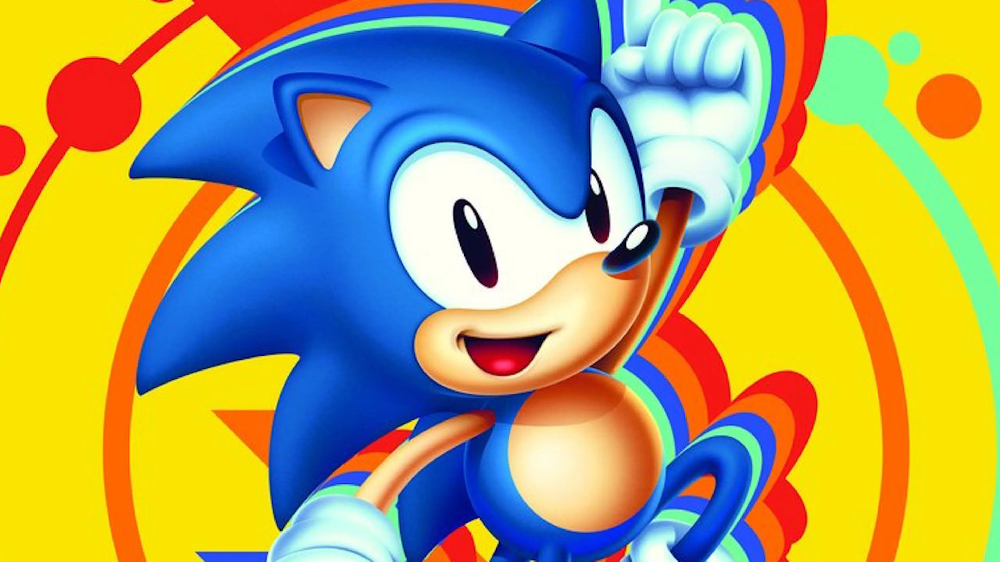
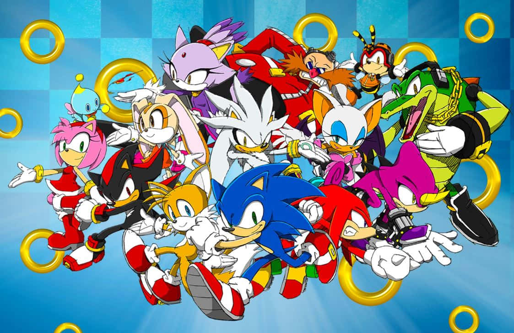
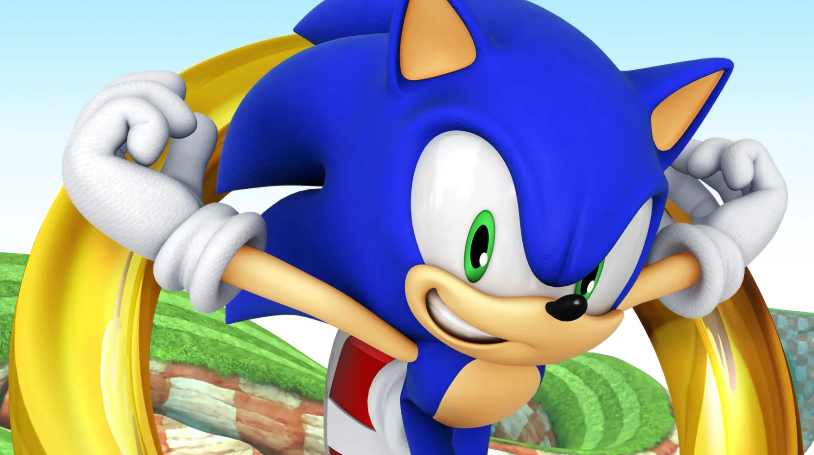
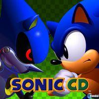

Sonic el Erizo
Sonic es un personaje de videojuegos creado por Sega. Es un erizo azul que puede correr a velocidades supersónicas y lucha contra el malvado Dr. Robotnik.

Fue presentado por primera vez en el juego "Sonic the Hedgehog" en 1991 para la consola Sega Genesis. Desde entonces, ha protagonizado numerosos juegos, series animadas y cómics.
Sonic es conocido por su actitud valiente y su deseo de proteger el mundo de las amenazas de Robotnik, también conocido como Dr. Eggman. Además, cuenta con amigos icónicos como Tails, Knuckles y Amy Rose.
Juegos
Este gran erizo tiene juegos que no puedes perderte
En estos grandes juegos tenemos:
Sonic 3D Blast (1996)
Sonic Adventure (1998)
Sonic Adventure 2 (2001)
Sonic Heroes (2003)
Sonic the Hedgehog (2006)
Sonic and the Secret Rings (2007)
Sonic Unleashed (2008)
Sonic and the Black Knight (2009)
Sonic Colors (2010)
Sonic Generations (2011)
Sonic Lost World (2013)
Sonic Forces (2017)
Sonic Frontiers (2022)
Música
Esta gran saga de juegos de este erizo veloz tiene su propia música.
De manera rápida se distingue por su ritmo pegadizo
Aquí una muestra de un gran tema de Sonic Mania
Metal Sonic
Metal Sonic es un robot creado por el Dr. Robotnik (Eggman) con el objetivo de ser una versión mejorada y más poderosa de Sonic.
Hizo su primera aparición en Sonic CD (1993) y desde entonces ha sido uno de los principales enemigos de Sonic.
Su papel en la historia suele ser el de un rival formidable para Sonic, igualando su velocidad y habilidades. Metal Sonic ha aparecido en varios juegos y spin-offs, a veces como jefe final y otras como personaje jugable.
Su diseño y capacidades han evolucionado a lo largo del tiempo, destacando su inteligencia artificial avanzada y su capacidad de aprendizaje.